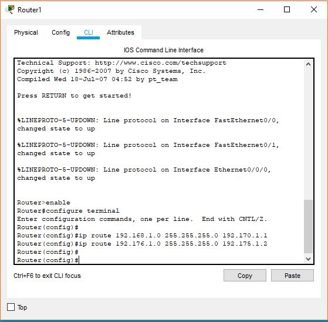

Konfigurimi I rrugeve Statike te Routerit te dyte me ane te komandave
Router>enable
Router# configure terminal
Enter configuration commands, one per line. End with CNTL/Z.
Router(config)# hostname R2
R2(config)#ip route 192.168.1.0 255.255.255 192.170.1.1
R2(config)#ip route 192.176.1.0 255.255.255 192.175.1.2